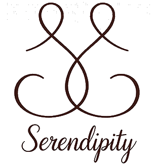
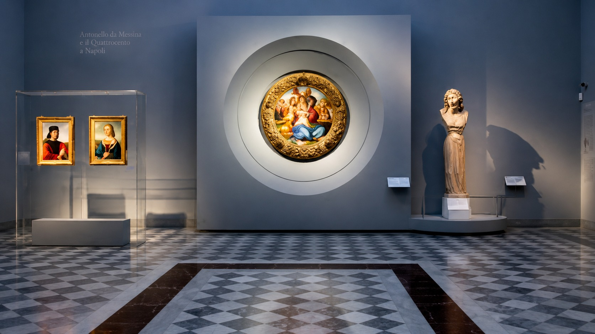
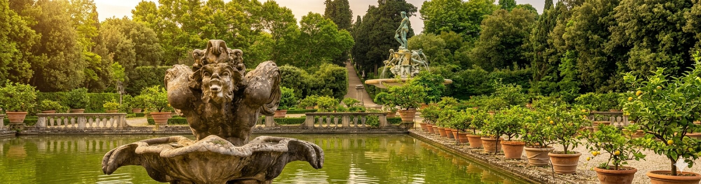
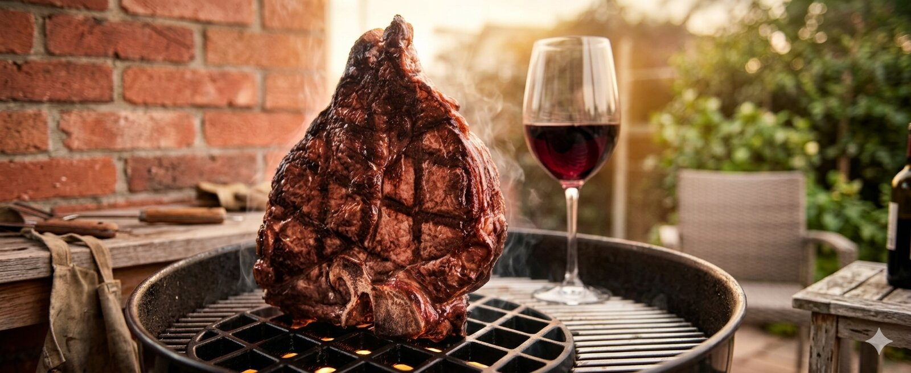

Spazio esterno privato
Un ampio piazzale dove riposare, mangiare fuori o godersi momenti di quiete.

Appartamento a Firenze · Via Orcagna
A pochi passi da Piazza Beccaria, Sant’Ambrogio e Santa Croce: uno spazio tranquillo dove riposare, lavorare e vivere la città lontano dal caos.
Vedi disponibilità su AirbnbLa casa
L’appartamento è a soli 1,5 km dal Duomo di Firenze, in una zona residenziale ben collegata al centro storico. L'ideale per coppie che vogliano la comodità di un ambiente domestico, e la vicinanza a tutte le principali attrazioni.
Gli spazi interni sono ampi e luminosi, i dettagli curati e funzionali. Lo stile rustico si fonde con linee più moderne, creando un’atmosfera confortevole e autentica.
L’ampio spazio esterno privato aggiunge respiro e libertà di movimento. È un luogo ideale per fare colazione, cenare all’aperto o semplicemente leggere qualcosa sorseggiando una tazza di tè.

Comfort
Non solo un posto letto, ma uno spazio living dove potersi rilassare con tutta la famiglia...

Un ampio piazzale dove riposare, mangiare fuori o godersi momenti di quiete.
Cucina attrezzata, spazi comodi, elettrodomestici, ideale anche per soggiorni prolungati.
Connessione in fibra ottica ultraveloce, affidabilità e stabilità per il lavoro remoto.
Termoarredi e condizionatori garantiscono la giusta temperatura in ogni stagione.
Bar, ristoranti, supermercati, negozi e fermate dei mezzi pubblici, per raggiungere facilmente il centro.
Un luogo che trasmette calma e calore, lontano dal caos della città.
Smart Working & Relax
Serendipity è il rifugio perfetto per chi cerca concentrazione. Grazie all'inquinamento acustico zero, una postazione ampia e luminosa e il Wi-Fi 6 ultraveloce trasformerai ogni task in un momento di puro focus.
Inizia la giornata con un vero caffè italiano e, dopo il dovere, scegli il tuo relax: una cena tranquilla in casa o un tuffo nella movida, raggiungibile con una passeggiata di soli 10 minuti.

Firenze
Vuoi vivere come un vero fiorentino? Tra Piazza Beccaria e l’anima verace di Sant’Ambrogio e Santa Croce, scoprirai la Firenze più autentica, fatta di botteghe storiche, mercati rionali e sapori della cucina tradizionale.
Con una piacevole passeggiata raggiungerai le icone mondiali: la maestosità del Duomo, i tesori degli Uffizi e il fascino senza tempo di Ponte Vecchio. Tutto il centro storico è a portata di mano.
Cerchi la magia? Segui i Lungarni per ammirare il tramonto da Piazzale Michelangelo o rigenerati tra il verde dei vicini colli fiorentini. È la posizione ideale per vivere la città da vero protagonista.

Scopri l’arte e la cultura visitando musei di fama mondiale, raggiungibili in pochi minuti a piedi.

Immergiti nelle bellezze naturali dei parchi e dei giardini cittadini, perfetti per passeggiate e momenti rilassanti.

Assapora i piatti tipici nei ristoranti della città, o dedicati alle tue ricette preferite direttamente nella cucina di casa.
Recensioni
Abbiamo trascorso un soggiorno assolutamente fantastico in questo appartamento a Firenze. Tutto è stato perfetto dall’inizio alla fine. L’appartamento è splendidamente ristrutturato, estremamente ben attrezzato, spazioso e curato con attenzione fino ai più piccoli dettagli. Il giardino privato era enorme e ha reso l’intera esperienza ancora più speciale e rilassante.
Il palazzo è molto bello e tranquillo, e la posizione è ottima per esplorare la città, continuando però a sentirsi in un contesto comodo e autenticamente locale.
Chiara e Serena sono state incredibilmente gentili, disponibili e comunicative per tutta la durata del soggiorno. Si percepisce davvero quanta cura e attenzione siano state dedicate all’appartamento e all’accoglienza degli ospiti.
Torneremo sicuramente!
Prenotazione
Verifica disponibilità e tariffe in tempo reale sulla pagina ufficiale di Serendipity su Airbnb. Assicurati il tuo rifugio fiorentino in pochi clic.